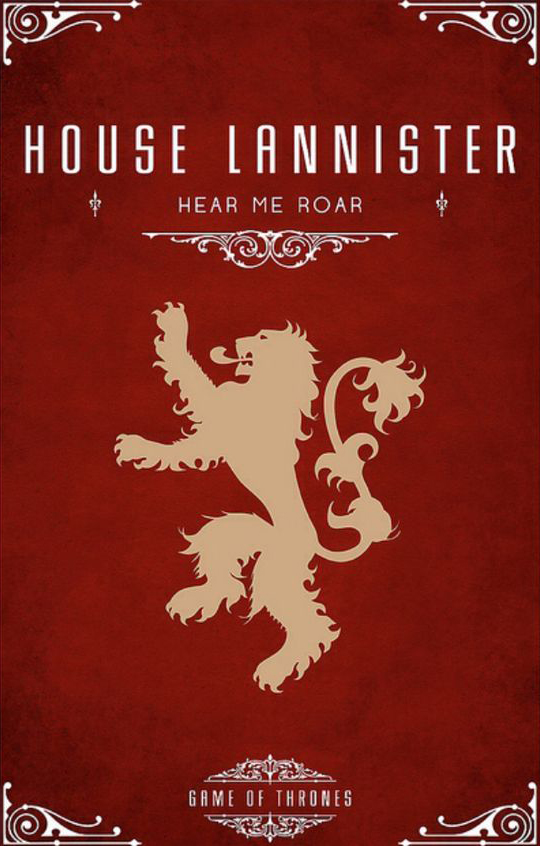
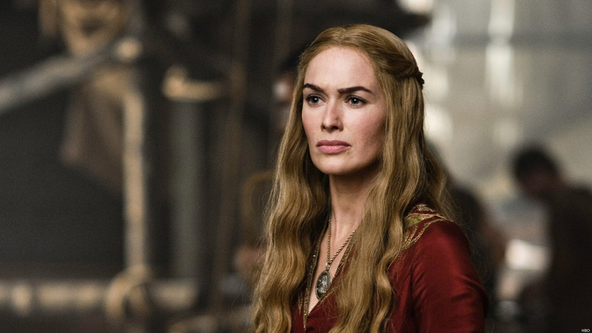

House Lannister of Casterly Rock is one of the Great Houses of Seven Kingdoms, and the principal house of the westerlands.
Their seat is Casterly Rock, though another branch exists that is based in nearby Lannisport. Their sigil is a golden lion on a field of crimson.
Their official motto is "Hear Me Roar!" However, their unofficial motto, equally well known,
is "A Lannister always pays his debts." The Warden of the West is a Lannister by tradition.
Fair-haired, tall, and handsome, the Lannisters are the blood of Andal adventurers who carved out a mighty kingdom in
the western hills and valleys. Through the female line they boast of descent from Lann the Clever, the legendary trickster
of the Age of Heroes who tricked the members of House Casterly into giving him Casterly Rock during the era of the First Men.
The Lannisters reigned as Kings of the Rock until they fell to the Targaryen conquest, but were allowed to
remain the liege lords of the westerlands. The House had fallen on hard times during the rule of Lord Tytos,
but was restored to its former glory by Lord Tywin. His daughter Cersei is the queen of King Robert I Baratheon,
while her twin Ser Jaime is a knight of Robert's Kingsguard. Members of the family tend to have golden hair and emerald green eyes.
The Lannisters suddenly appear as First Men in historical records of the Age of Heroes, ruling large portions of the westerlands from Casterly Rock just as the Casterlys vanished from the chronicles. They claim descent from Lann the Clever, the legendary figure who tricked the Casterlys from their seat, Casterly Rock.

The Lannister sigil is a gold lion, on a crimson field.The Lannister's words are "Hear me roar".
During the Andal invasion of Westeros, House Lannister initially fought the invading Andal warlords and adventurers that ventured into the westerlands but then took a policy of arranging marriages between them and the daughters of the local First Men houses. They also took Andal sons and daughters as wards and fosterlings at Casterly Rock to prevent betrayals such as those that had happened in the Vale. In time, the Lannister kings also wed their children to Andals, and when King Gerold III died without male issue, a council crowned the Andal husband of Gerold's only daughter, Ser Joffrey Lydden, who took the Lannister name. Thus the Lannisters became an Andal house, though their First Men name lived on.
Cersei Lannister
